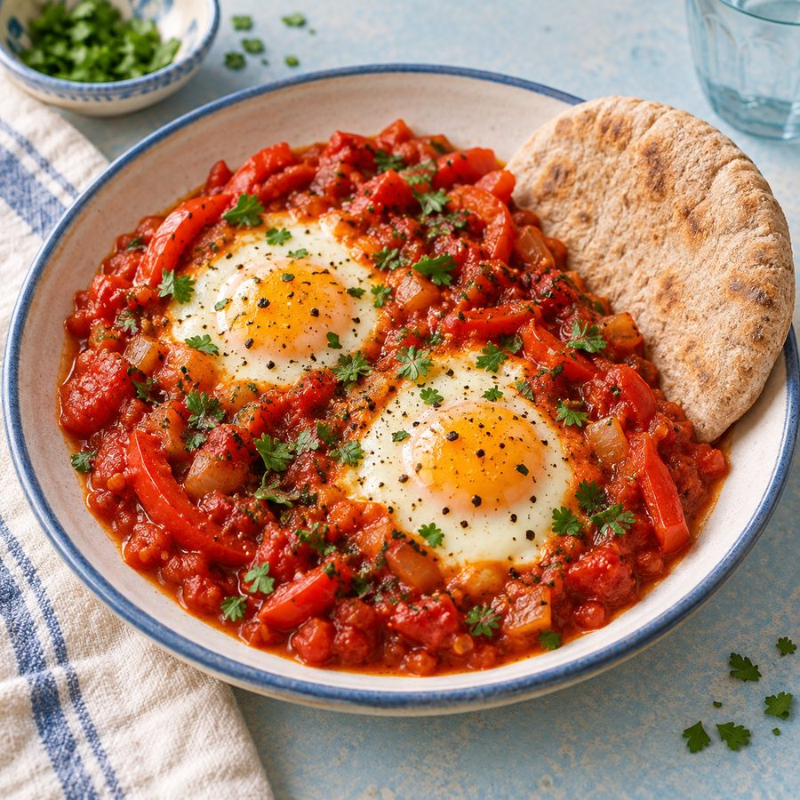

SMALL PLATES, BIG WORLD
Good food, less fuss.
Explore gentle family dishes, treats and drinks inspired by the Middle East, Asia, Africa and beyond. Pick a moment and find something to try with ingredients from UK shops.
Find an idea
LET'S FIND SOMETHING TASTY
What works for today?
Pick one from each row, or browse everything.
What are we making?
What would you like a hand with?
No matches for that pair. Try another choice above.
Look for ingredients at Tesco, Sainsbury’s or Asda; stock varies. Check packaged ingredients and allergens, and adjust portions and textures for your child. These are simple family ideas, not tailored nutrition advice.